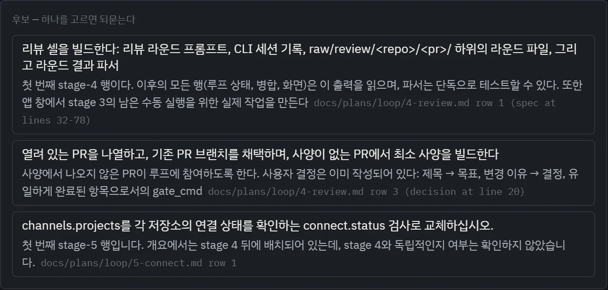
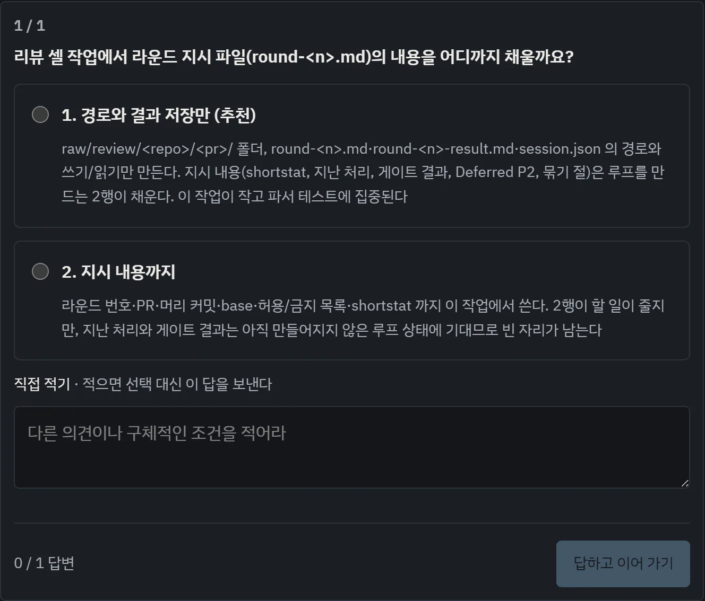
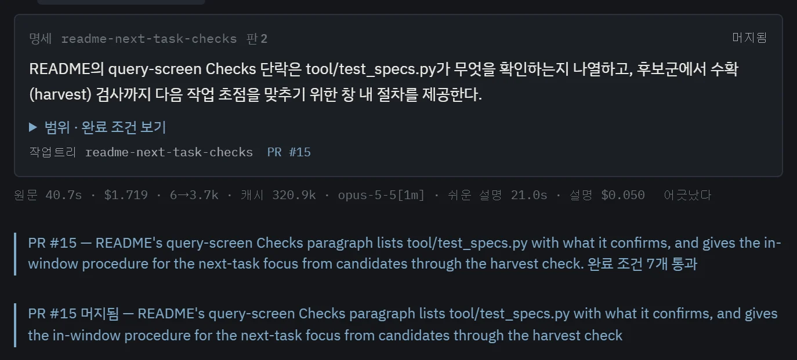

할 일을 정하고 맡기기
앱의 다음 작업 포커스에서 할 일을 대화로 정하면 명세 카드 한 장이 나와요. [시작]을 누르면 에이전트가 작업 브랜치에서 그 명세대로 일하고, 서버가 검사를 다시 돌려 통과해야 PR이 올라가요.
대화로 명세 한 장을 정해요
이 포커스의 에이전트는 일을 직접 하지 않아요. 일할 세션에게 넘길 명세를 사람과 함께 정할 뿐이에요. 무엇을 할지 아직 모르겠으면 후보를 달라고 하고, 하고 싶은 일이 있으면 그냥 말하면 돼요.



명세는 요청 전체를 덮어야 해요. 사람이 직접 해야 하는 부분도 완료 조건에 남겨요. 한 PR에 넘칠 만큼 크면 조각마다 한 장씩 나오고, 조각마다 따로 작업 브랜치를 받아요.
[시작]을 누르면 PR까지 가요
- 작업 브랜치선택한 저장소에 작업 브랜치와 작업트리(따로 꺼낸 작업 폴더)를 만들어요
- 에이전트가 일하기명세를 지시문으로 받은 Claude Code나 Codex가 그 폴더에서 일해요
- 마무리 보고끝내기 전에 중간 테스트를 정리하고 보고해요. 빠뜨리면 서버가 한 번 더 요청해요
- 게이트서버가 저장소의 검사 명령을 직접 다시 돌려요
- PR통과해야 올라가요. 그다음은 ③ 리뷰로 이어져요
핵심은 에이전트의 “통과했어요”를 믿지 않는다는 거예요. 게이트는 서버가 돌린 결과만 봐요. 저장소가 검사를 더 등록해 뒀다면, 이번에 바뀐 파일에 맞는 검사를 Jev가 하나 더 골라 PR 전에 돌려요. 실패하면 PR은 올라가지 않아요.
작업 에이전트는 작업 브랜치에서 전체 권한으로 일해요. 파일을 쓸 때마다 허락을 기다리지 않아요. 중요한 변경은 커밋해 두고 쓰세요. 모델 사용량은 각자의 CLI 계정에서 나가요.
큰 일은 계획 PR부터 올려요
한두 PR로 끝나지 않을 일은 바로 맡기지 않고 계획부터 세워요. 대화창 위의 [계획 세우기]가 세 역할로 나눠 도와요.
| 역할 | 하는 일 |
|---|---|
| 계획자 | 저장소의 계획과 결정을 읽고, 범위가 바뀌는 결정은 선택지로 물어요. 그다음 웹을 조사해 출처가 붙은 계획 문서(개요 한 장과 단계별 문서)를 쓰고 PR을 올려요 |
| 수정자 | 리뷰 지적을 받아 계획 문서를 고쳐요 |
| 리뷰어 | 코드가 아니라 계획 문서의 기준으로 따로 읽어요 |
시작하기 전에 시간 · 호출 수 · 토큰 한도를 정해요. 계획 PR이 승인돼도 구현이나 머지가 저절로 시작되지는 않아요. 머지는 사람이 해요.
코드 빚은 동작을 그대로 두고 갚아요
에이전트가 빠르게 쓴 코드는 한 번에 리뷰하기 어려울 만큼 커져요. 리팩터링 포커스는 목적 하나를 골라 저장소를 읽기만 하며 조사하고, 실행할 명세 카드를 만들어요. 카드는 위의 보통 작업처럼 돌지만, 테스트에 관한 약속이 하나 더 붙어요.
| 목적 | 하는 일 | 테스트 약속 |
|---|---|---|
| 동작 보존 | 큰 함수와 모듈을 책임에 따라 나눠요. 동작도, 알려진 버그도 바꾸지 않아요 | 첫 턴은 테스트만 써요. 서버가 손대지 않은 코드에서 통과를 확인해 얼려 둔 뒤에 리팩터링을 시켜요 |
| 복잡도 정리 | 이미 보장된 곳의 중복 검사, 안 쓰는 호환 분기, 낡은 테스트를 걷어 내요. 인증 · 입력 · 동시성 경계의 방어는 남겨요 | 바꿀 테스트를 미리 밝혀요. 밝히지 않은 기존 테스트는 그대로여야 해요 |
| 구조 · 성능 | 의존 순환과 측정된 병목을 고쳐요. 같은 조건에서 잰 개선 없이 캐시나 층을 덧붙이지 않아요 | 성능 카드는 측정 명령이 있어야 시작돼요. 같은 조건에서 전과 후를 재요 |
조사는 이렇게 흘러가요
- 기준선기준 커밋을 따로 꺼내 검사를 한 번 돌리고 결과를 적어 둬요
- 지도저장소를 기능 흐름(파이프라인) 단위로 나눠요
- 흐름마다 읽기흐름 하나씩 읽기만 해서 빚과 증거를 적어요
- 카드 만들기실행할 명세 카드와 카드 사이의 순서를 내요. 서버가 형식과 순환을 검사해요
- 카드 [시작]보통 작업처럼 돌아요. 앞 카드가 머지 전이면 시작하지 않아요
- 기준선과 비교새 실패가 하나라도 있으면 PR을 열지 않아요
조사는 사람의 작업 폴더가 아니라 따로 꺼낸 기준 커밋을 읽어요. 조사 중에 브랜치를 바꾸거나 파일을 고쳐도 결과가 흔들리지 않아요. 조사는 카드를 만들 뿐이고, 카드를 시작하는 건 사람이에요. 머지할 때마다 파일이 기록보다 커지지 못하게 하는 래칫 이야기는 이야기 6장에 있어요.